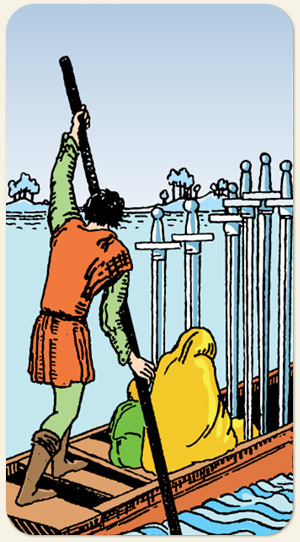

Seis de Espadas
Resgate por um homem que sabe navegar, túnica para cobrir a vergonha, a busca para reconciliar ideias.
Símbolos: Barco e Barqueiro, Rio, Espadas Fincadas, uma Mulher com uma Criança, Água Calma e Água Agitada, Árvores, Pequenos Montes.
Positivo: Reparar o erro, refazer a estratégia, procurar refúgio, receber ajuda, abrigar-se, resguardar-se, reservar-se. Não é momento para atacar, e sim para reunir forças.
Negativo: Sair de uma cena de forma vergonhosa, fuga da tentativa de reconciliação, fugir de si mesmo, chutar cachorro morto, dar soco em ponta de faca, perder-se em seus pensamentos, resistir à mudança, perder o resgate, não colaborar com a ajuda, perder-se nos erros.